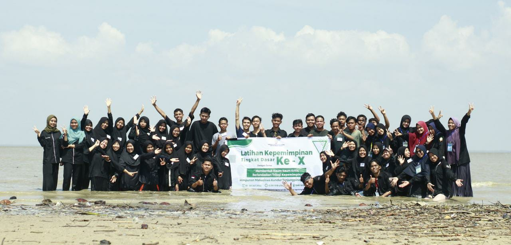

Gelar Latihan Kepemimpinan, HIMK Ciptakan Kader Intelektual, Kritis, dan Progresif
Himpunan Mahasiswa Kundur (HIMK) Tanjungpinang-Bintan mengadakan Latihan Kepemimpinan Tingkat Dasar yang ke-X. Latihan Kepemimpinan Tingkat Dasar ini berlangsung pada tanggal 01-03 Juli, yang dilaksanakan di SMK Negeri Kundur, Desa Sawang Selatan, Kundur Barat. Kegiatan ini diikuti oleh 31 orang peserta asal Pulau Kundur dan berkuliah di Tanjungpinang dan Bintan. Pada LKTD ke-10 ini, mengangkat tema "Membentuk Kaum-kaum Kritis Berlandaskan Trilogi Kepemimpinan". Dari tema tersebut dijelaskan bahwa bagaimana membentuk karakter kepemimpinan dalam setiap diri anggota HIMK, yang berlandaskan Trilogi Kepemimpinan (ing ngarso sung tuladha, ing madya mangun karsa, tut wuri handayani). Ing ngarso sung tuladha, yang berarti di depan menjadi contoh atau panutan. Disini seorang pemimpin harus mampu memberikan contoh atau suri tauladan yang baik kepada orang lain disekitarnya. Ing madya mangun karsa yang berarti, sebagai seorang pemimpin yang berada di tengah, harus mampu menempatkan diri dan menyemangati. Tujuannya agar dapat mencapai kinerja yang lebih baik lagi dalam memimpin sebuah organisasi. Sedangkan Tut wuri handayani berarti, seorang pemimpin harus dapat memberikan dorongan dan arahan. Hal ini bertujuan agar semua berjalan sesuai dengan visi, misi, dan strategi yang ditetapkan organisasi. "Semua hal ini sesuai dengan konteks organisasi yang ingin dicapai nantinya" . ujar M. Teo Renaldi selaku ketua pelaksana dalam kegiatan latihan kepemimpinan kali ini. Latihan Kepemimpinan Tingkat Dasar ini menjadi kegiatan yang diselenggarakan setiap tahunnya oleh HIMK. Dalam kegiatan ini para kader-kader HIMK dibentuk intelektual dan mentalitasnya, agar terbentuk sifat dan jiwa kepemimpinan setiap individu untuk melanjutkan estafet kepemimpinan di organisasi. Latihan Kepemimpinan berjalan dengan lancar dan tertib. Semua peserta antusias dan disiplin mengikuti tahap demi tahap kegiatan. "HIMK telah berumur 10 tahun, dan ini merupakan Latihan Kepemimpinan Tingkat Dasar yang ke-10. Dengan dilaksanakan latihan kepemimpinan ini, diharapkan seluruh peserta dapat memaknai setiap rangkaian kegiatan dari awal hingga selesai. Selain itu tetap ikut berkontribusi di masyarakat secara langsung, terutama di kampung halaman" sebut Kakanda Muhammad Nurdin Andika selaku Wakil Ketua Umum HIMK Tanjungpinang-Bintan dalam kata sambutannya.
Penulis: Nurzabera